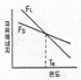
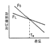
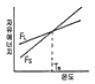
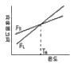
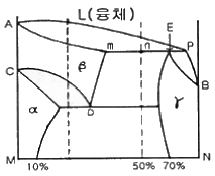
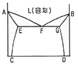

금속재료산업기사 (2009-05-10 기출문제)
1과목: 금속재료
1. 마그네슘의 특징을 설명한 것 중 틀린 것은?
- 비중은 약 1.7정도이다.
- 내산성은 극히 나쁘나 내알칼리성은 강하다.
- 해수에 대단히 강하며 용해시 수소는 방출하지 않는다.
- 주물로서 마그네슘 합금은 Al합금보다 비강도가 우수하다.
(정답률: 82%)

2. A, B 2종류의 금속이 고용체를 만들 때 전기저항이나 강도의 증가가 최대가 되는 비율은?
- A : B ＝ 30 : 70
- A : B ＝ 50 : 50
- A : B ＝ 20 : 80
- 비율과 관계없다.
(정답률: 82%)
3. Al-Zn-Mg 계 초초두랄루민 합금으로 항공기용 신소재로 사용되는 합금은?
- ESD
- DPP
- POM
- KSL
(정답률: 82%)
4. 온도 t℃에서 길이 ℓ인 봉을 온도 t℃로 올릴 때 길이가 ℓ′로 팽창했다면 이 때의 선팽창 계수는?
- ℓ - ℓ′ / ℓ(t′ - t)
- ℓ′ - ℓ / ℓ(t′ - t)
- ℓ(t′ - t) / ℓ′ - ℓ
- ℓ(t – t′) / ℓ′ - ℓ
(정답률: 42%)
5. 다음 중 섬유강화 금속의 특징으로 틀린 것은?
- 섬유축 방향의 강도가 크다.
- 전자기적 성질이 우수하다.
- 열적 안정성이 우수하다.
- 비강도 및 비강성이 낮다.
(정답률: 70%)
6. 수소저장용 합금에 대한 설명으로 틀린 것은?
- 수소가스와 반응하여 금속수소화물이 된다.
- 금속수소화물은 1cm3 당 1022개의 수소원자를 포함한다.
- 금속수소화물로 수소를 저장하면 10기압의 고압수소가스밀도와 같다.
- 저장된 수소는 필요에 따라 금속수소화물에서 방출시켜 사용한다.
(정답률: 64%)
7. 다음 중 초경합금에 사용되는 것은?
- TIC
- MgO
- NaC
- ZnO
(정답률: 86%)
8. 다음 중 강성률 (G)을 구하는 식으로 옳은 것은? (단, E는 탄성계수, v는 포아송비이다.)
- v / 2(1 + E)
- 1 + E / 2 · v
- E / 2(1 + v)
- 2 · E / (1 + v)
(정답률: 55%)
9. Al-Cu합금의 시효과정을 옳게 나타낸 것은?
- 과포화고용체 → G.PⅠ zone → G.PⅡ zone → θ′→θ(CuAl2)
- G.PⅠ zone → 과포화고용체 → θ(CuAl2) → G.PⅡ zone
- 과포화고용체 → G.PⅡ zone → G.PⅠ zone → θ′ → θ(CuAl2)
- G.PⅡ zone → 과포화고용체 → θ′ → G.PⅠ zone → θ(CuAl2)
(정답률: 59%)
10. 마르에이징(Maraging)강에 대한 설명 중 틀린 것은?
- 금속간화합물의 석출강화를 도모한 강이다.
- 고탄소 오스테나이트를 시효석출에 의하여 연화시킨 강이다.
- 실용강에는 18%Ni계 이며, 이 밖에 20%Ni계와 25%Ni계 등이 있다.
- 인성이 우수한 초고장력강으로 항공우주산업, 압력용기, 기계구조용강 등의 중요한 부분에 사용된다.
(정답률: 55%)
11. 마우러 조직도는 주철의 어떤 원소들의 함량에 따른 조직의 분포도 인가?
- 탄소와 규소
- 탄소와 망간
- 탄소와 마그네슘
- 규소와 마그네슘
(정답률: 65%)
12. 다음 중 소성변형에 대한 설명으로 틀린 것은?
- 소성변형하기 쉬운 성질을 가소성이라 한다.
- 재료에 외력을 가했다가 외력을 제거하면 원상태로 되돌아오는 것을 소성이라 한다.
- 소성가공법에는 단조, 압연, 인발 등이 있다.
- 가공으로 생긴 내부응력을 적당히 남게하여 기계적 성질을 향상시킨다.
(정답률: 74%)
13. Fe - Fe3C - Fe3C 의 3원 공정물로 재질을 취약하게 하는 주철의 조직은?
- 칠 조직(chill structure)
- 스테다이트 조직(steadite structure)
- 주상 조직(columnar structure)
- 위드만스테텐 조직(widmanstatten structure)
(정답률: 50%)
14. 금속의 일반적인 특성을 설명한 것 중 틀린 것은?
- 연성 및 전성이 좋다.
- 열과 전기의 부도체이다.
- 금속적 광택을 갖는다.
- 고체상태에서 결정구조를 갖는다.
(정답률: 87%)
15. 특수 황동의 명칭에 따른 조성의 비율이 틀린것은?
- 델타메탈 : 6-4 황동에 Fe을 1~2% 첨가한 합금
- 에드미럴티 황동 : 7-3 황동에 Sn을 1% 첨가한 합금
- 양은 : 7-3 황동에 Ag을 7~30% 첨가한 합금
- 알부락(albrac) : 7-3 황동에 Al을 2% 첨가한 합금
(정답률: 65%)
16. 탄소강의 기계적 성질에 대한 설명으로 옳은 것은?
- 접촉저항 및 고유저항이 커야 한다.
- 비열 및 열전도율이 높아야 한다.
- 탄소량의 증가에 따라 경도는 증가한다.
- 탄소량의 증가에 따라 단면수축률, 연신율은 증가한다.
(정답률: 79%)
17. 소결 전기 접점재료의 구비조건이 아닌 것은?
- 접촉저항 및 고유저항이 커야한다.
- 비열 및 열전도율이 높아야한다.
- 융착 현상이 적어야 한다.
- 열 및 충격에 잘 견디어야 한다.
(정답률: 53%)
18. HSLA 합금강보다 한 단계 발전된 자동차의 경량화 재료로서 개발되고 있는 복합 조직강을 무엇이라 하는가?
- SPE강
- TSM강
- PVD강
- DP강
(정답률: 57%)
19. 내부응력을 받는 구조물 또는 제품에 어떠한 외력을 가하지 않은 방치 상태에서도 자연적으로 재료가 파괴되는 현상은?
- 헤어크랙
- 시즌크랙
- 상온취성
- 고온취성
(정답률: 57%)
20. 다음 중 스테인리스강에 대한 설명으로 틀린 것은?
- 2상 스테인리스강은 오스테나이트와 페라이트의 양쪽 장점을 취한 강이다.
- 18%Cr-8%Ni 스테인리스강은 오스테나이트계이다.
- 오스테나이트계 스테인리스강은 입계부식과 응력부식이 일어나기 쉽다.
- 마텐자이트계 스테인리스강은 PH 계로 Al, Ti, Nb 등을 첨가하여 강도를 높인다.
(정답률: 50%)
2과목: 금속조직
21. 다음 조직 중 혼합물에 속하는 것은?
- 페라이트
- 시멘타이트
- 오스테나이트
- 펄라이트
(정답률: 46%)
22. 다음 중 버거스벡터와 전위선이 수직한 경우의 전위를 무엇이라 하는가?
- 연화전위
- 인상전위
- 나사전위
- 혼합전위
(정답률: 39%)
23. 냉간가공으로 변형된금속을 풀림처리하여 결정 내부에서 새로운 결정립의 핵이 생성되고, 이것이 성장하여 전체가 변형이 없는 결정립으로 치환되는 과정은?
- 다각화(polygonization)
- 아입계(sub-boundary)
- 소경각 입계(small angle boundary)
- 재경정(recrystallization)
(정답률: 79%)
24. 전위의 상승운동에 대한 설명으로 틀린 것은?
- 슬립면의 대하여 수직한 운동이다.
- 온도가 높을수록 활발하게 일어난다.
- 버거스(Burgers)벡터가 긴 방향으로 잘 일어난다.
- 원자공공(vacancy)의 확산에 의해 전위의 상승이 쉽게 일어난다.
(정답률: 35%)
25. Cu, Al, Ni 등의 금속에서 슬립(slip)이 가장 쉽게 일어날 수 있는 면은?
- (011)
- (101)
- (110)
- (111)
(정답률: 60%)
26. 금속의 육방정계의 대표적인 면이 아닌 것은?
- 기저면(Base plane)
- 각통면(Prismatic plane)
- 주조면(Cast plane)
- 각추면(Pyramidal plane)
(정답률: 77%)
27. 금속의 확산기구를 설명할 수 있는 가장 기본적인 개념은?
- 가전자의 공유
- 결정내 원자의 진동
- 자유전자의 존재
- 결정내 원자의 이온화
(정답률: 44%)
28. 금속의 확산에 관한 Fick의 제1법칙은? (단, J : 농도구배, D : 확산계수, x : 봉의 길이방향, c : 농도 이다.)
- J = D(dc / dx)
- J = -D(dc / dx)
- J = D(dx / dc)
- J = -D(dx / dc)
(정답률: 80%)
29. 금속 결함 중에서 점결함에 해당되는 것은?
- 원자공공
- 전위
- 계면 결함
- 적층결함
(정답률: 52%)
30. 규칙 - 불규칙 변태에 관한 설명으로 틀린 것은?
- 규칙화가 진행되면 강도가 증가한다.
- 규칙합금을 소성가공하면 규칙도가 증가한다.
- 규칙화가 진행되면 전기전도도가 커진다.
- 규칙-불규칙 상태의 변화에 따라 자성의 변화에 영향을 준다.
(정답률: 57%)
31. 마텐자이트 변태에 대하 설명으로 틀린 것은?
- 무확산변태이다.
- 협동적 원자운동에 의한 변태이다.
- 모상과 마텐자이트의 화학조성은 다르다.
- 과포화고용체가 생기면 표면에 기복현상이 일어난다.
(정답률: 52%)
32. 순철을 910℃ 이상으로 가열하면 BCC 구조에서 FCC 구조로 변화하는 변태점은?
- A1
- A2
- A3
- A4
(정답률: 69%)
33. 순금속 중에서 같은 종류의 원자가 확산하는 현상을 어떤 확산이라 하는가?
- 상호확산
- 입계확산
- 자기확산
- 표면확산
(정답률: 75%)
34. 금속의 부식에 대한 설명 중 틀린 것은?
- 습기가 많은 대기 중일수록 부식되기 쉽다.
- 이산화탄소는 부식을 심하게 촉진한다.
- 염화수소, 암모니아 가스는 부식을 촉진한다.
- 이온화 경향이 작은 금속일수록 부식되기 쉽다.
(정답률: 69%)
35. 온도에 따른 액상 및 고상(동일물질)의 자유에너지 변화를 바르게 나타낸 그래프는? (단, Tm : 용융온도, FL : 액상의 자유에너지, Fs : 고상의 자유에너지이다.)




(정답률: 46%)
36. 그림의 상태도에서 E 점의 평행반응은 어떤 반응 인가?

- 포정반응
- 포석반응
- 공석반응
- 공정반응
(정답률: 50%)
37. 0.2% 탄소강이 상온에서 초석 페라이트(α)와 펄라이트(P)의 양은 약 몇 & 인가? (단, 공석점은 0.80%, α의 고용한도는 0.025%C로 한다.)
- α = 66, P = 34
- α = 34, P = 66
- α = 77, P = 23
- α = 23, P = 77
(정답률: 56%)
38. 다음 공석 상태도에서 액상선은?

- DG선
- AF선
- EC선
- GF선
(정답률: 72%)
39. 다음 중 금속의 변태점 측정을 위한 열분석 방법이 아닌 것은?
- 냉각곡선을 측정하는 방법
- 시차곡선을 측정하는 방법
- 열전도도를 측정하는 방법
- 비열곡선을 측정하는 방법
(정답률: 32%)
40. 심한 가공을 받은 다결정체는 결정방위의 분포가 마음대로 되어 있지 않고 어떤 일정한 방향을 갖는 다. 이와 같이 우선 방위를 가지는 조직은?
- 집합조직
- 등축정조직
- 베이타이트조직
- 위드만스테텐조직
(정답률: 42%)
3과목: 금속열처리
41. 연소용 가스 버너를 내열 강관 속에 붙여 강관 속에서 가스를 연소시켜 원관표면으로부터 내는 복사열에 의해 열처리하는 가열로(복사관로)는?
- 대차로
- 상형로
- 라디안트 튜브로
- 회전식 레토르트로
(정답률: 66%)
42. 기계구조용 탄소강 SM55C 화염 담금질 가열온도 범위는?
- 700~780℃
- 800~880℃
- 1000~1080℃
- 1100~1150℃
(정답률: 50%)
43. 고속도 공구강의 담금질 온도가 상승함에 따라 나타나는 현상이 아닌 것은?
- 고온 경도가 크게 된다.
- 잔류 오스테나이트의 양이 감소한다.
- 오스테나이트의 결정립이 조대하게 된다.
- 탄화물의 고용량이 증대하여 기지 중의 합금 원소가 증가한다.
(정답률: 52%)
44. 인상담금질(Time Quenching)에서 인상시기에 대한 설명으로 틀린 것은?
- 가열물의 직경 또는 3mm당 1초 동안 수냉한 후 유냉 또는 공냉 한다.
- 화색(火色)이 나타나지 않을 때 까지의 2배의 시간만큼 수냉한 후 공냉한다.
- 기름의 기포발생이 시작되었을 때 꺼내어 공냉 한다.
- 가열물의 직경 또는 두께 1mm당 1초 동안 유냉한 후 공냉한다.
(정답률: 68%)
45. 가단주철은 백주철을 열처리하여 만들어 지는 것이다. 다음 중 가단주철의 종류가 아닌 것은?
- 백심가단주철
- 흑심가단주철
- 펄라이트가단주철
- 오스테나이트가단주철
(정답률: 57%)
46. 0℃ 이하의 온도 즉, sub-zero 온도에서 냉각시키는 심냉처리의 목적으로 옳은 것은?
- 경화된 강의 잔류오스트나이트를 펄라이트화 한다.
- 경화된 강의 잔류오스트나이트를 마텐자이트화 한다.
- 경화된 강의 잔류펄라이트를 시멘타이트화 한다
- 경화된 강의 잔류시멘타이트를 펄라이트화 한다
(정답률: 78%)
47. 침탄처리로 만들어지는 침탄층의 깊이는 온도, 시간에 따라 다르다. 침탄온도, 890℃ 로 4시간 침탄 할 때 생성되는 침탄층의 깊이는 약 몇 mm인가? (단, 온도에 따른 확산정수 값은 0.533 이며 Harris의 식을 이용한다.)
- 0.1
- 1.1
- 2.1
- 3.1
(정답률: 60%)
48. Ti 및 Ti 합금을 응력 제거 처리하는 이유 또는 처리 온도에 대한 설명으로 틀린 것은?
- 잔류 응력을 감소시키기 때문에
- 제품에 형상에 안정성을 줄 수 있기 때문에
- 응력 제거처리시 과시효를 방지하기 때문에
- 응력 제거처리 온도 중 315~480℃에서는 냉각을 가속하기 위해 유냉 또는 수냉처리를 한다.
(정답률: 65%)
49. 황동제품의 내부응력을 제거하고 시기균열을 방지하기 위한 어닐링처리 시 가장 적당한 방법은?
- 300℃로 1시간 어닐링한다.
- 500℃로 1시간 어닐링한다.
- 600℃로 1시간 어닐링한다.
- 700℃로 1시간 어닐링한다.
(정답률: 79%)
50. 강을 가열하여 냉각제 속에 넣었을 때 냉각되는 단계를 바르게 나열한 것은?
- 증기막단계 → 비등단계 → 대류단계
- 증기막단계 → 대류단계 → 비등단계
- 대류단계 → 비등단계 → 증기막단계
- 대류단계 → 증기막단계 → 비등단계
(정답률: 64%)
51. 강의 열처리시 탈탄을 방지하기 위한 방법이 아닌 것은?
- 염욕 및 금속욕에서 가열한다.
- 분위기 가스 속에서 가열한다.
- 표면에 금속 도금 또는 피복을 한다.
- 고온으로 장시간 가열한다.
(정답률: 87%)
52. 경화능을 향상시킬 수 있는 방법으로 가장 적당한 것은?
- 질량효과를 크게 한다.
- 직경이 작은 제품보다 큰 제품을 열퍼리 한다.
- 오스테나이트의 결정입자를 크게 한다.
- 담금질성을 증가시키는 Co, V 등을 첨가한다.
(정답률: 48%)
53. 다음 열전대 중 가장 높은 온도를 측정할 수 있는 것은?
- 백금-백금•로듈
- 구리-콘스탄탄
- 크로멜-알루멜
- 철-콘스탄탄
(정답률: 78%)
54. 담금질 변형에 대한 설명으로 옳은 것은?
- 축이 긴 제품은 수평으로 냉각하여 변형을 방지한다.
- 변형을 미리 예측하고 반대 방향으로 변형시켜 놓는다.
- 변형 방지를 위하여 담금질 온도 이상으로 높여 담금질 한다.
- 기름 담금질 → 물 담금질 → 공기 담금질 순서로 변형이 적어진다.
(정답률: 74%)
55. 침탄담금질시 나타나는 박리의 원인이 아닌 것은?
- 반복 침탄을 할 때
- 원재료가 너무 연할 때
- 확산층이 깊을 때
- 과잉침탄으로 인하여 C%가 표면에 너무 많을 때
(정답률: 38%)
56. 강을 Ac3나 Acm선 이상의 온도에서 실시하는 열처리 방법이 아닌 것은?
- 템퍼링(Tempering)
- 퀜칭(Quenching)
- 어닐링(Annealing)
- 노말라이징(Nomalizing)
(정답률: 62%)
57. 열처리의 3가지 냉각방법에 해당되지 않는 것은?
- 연속 냉각
- 중합 냉각
- 항온 냉각
- 2단 냉각
(정답률: 73%)
58. 고주파담금질의 특징을 설명한 것 중 틀린 것은?
- 열처리를 한 후 연삭공정을 생략 또는 단축할 수 있다.
- 강의 표면은 경도 낮고 중심부는 경도가 높으며 내마모성이 향상된다.
- 기계적 성질이 향상되고 동적강도(動的强度)가 높다.
- 가열시간이 극히 짧으므로 탈탄되는 일이 없고 산화가 극히 적다.
(정답률: 46%)
59. 변성로에서 그을음을 저게하기 위한 번아웃(burn out) 작업 방법으로 틀린 것은?
- 원료가스의 송입을 중지한다.
- 변성로의 온도를 상용온도보다 약 50℃ 정도 낮춘다.
- 변성로에 변성 능력의 약 10% 정도의 고기를 송입한다.
- 변성로 내 가연성 가스가 없다고 판단될 때 공기 송입량을 늘린다.
(정답률: 73%)
60. 구상흑연주철의 제2단 흑연화 처리의 목적으로 옳은 것은?
- 기지를 페라이트화하여 연성을 증가시킨다.
- 기지를 마텐자이트화하여 경도를 증가시킨다.
- 기지를 시멘타이트화하여 표면경화를 시킨다.
- 기지를 오스테나이트화하여 강도를 증가시킨다.
(정답률: 40%)
4과목: 재료시험
61. 크리프(creep)곡선에서 속도가 대략 일정하게 진행되는 정상 크리프 단계는?
- 제 1 단계
- 제 2 단계
- 제 3 단계
- 제 4 단계
(정답률: 77%)
62. 다음 열처리된 조직 중 피로 한도가 가장 큰 조직은?
- 마텐자이트 + 트루스타이트
- 펄라이트 + 페라이트
- 트루스타이트 + 오스테나이트
- 페라이트+ 오스테나이트
(정답률: 69%)
63. 에릭슨 시험은 재료의 어떤 서질을 알기 위한 시험인가?
- 판재의 연성
- 환봉의 각도
- 주철의 압축력
- 강의 단조성
(정답률: 81%)
64. 단면 치수에 대한 길이의 비에 대하여 파괴현상에 차이가 나타나는 것으로 콘크리트나 주철과 같은 재료의 시험법으로 가장 많이 이용되는 것은?
- 인장시험법
- 굽힘시험법
- 압축시험법
- 비틀림시험법
(정답률: 44%)
65. 단면 20×20cm의 재료에 80ton 의 전단력을 가했을 때 거리 20cm되는 지점에서의 전단변형량은 몇 cm인가? (단, 전단탄성계수(G)는 80000kgf/cm2이다.)
- 0.5
- 0.⑤
- 0.0⑤
- 0.015
(정답률: 40%)
66. 침투탐상검사에서 관찰하는 방법 중 기호 "DF" 가 의미 하는 것은?
- 염색 침투액을 사용
- 형과 침투액을 사용
- 이원성 염색 침투액을 사용
- 이원성 형과 침투액을 사용
(정답률: 52%)
67. 다음 중 종파의 속도가 가장 빠른 것은?
- 물
- 공기
- 알루미늄
- 아크릴수지
(정답률: 42%)
68. 다음 중 연소의 3요소에 해당되지 않는 것은?
- 가연물
- 촉매
- 점화원
- 산소공급원
(정답률: 74%)
69. 안전•보건표지의 색채와 그 용도가 옳게 짝지어진 것은?
- 빨강 - 안내
- 노랑 - 경고
- 파랑 - 금지
- 녹색 - 지시
(정답률: 81%)
70. 마모시험에 영향을 미치는 주된 요인이 아닌 것은?
- 마찰속도
- 마찰압력
- 마찰면 거칠기
- 시험편의 밀도
(정답률: 80%)
71. 초음파탐상검사에서 STB-A1 시험편을 사용하여 측정 및 조정할 수 없는 것은?
- 측정 범위의 조정
- 탐상감도의 조정
- 경사각 탐촉자의 입사점 측정
- 경사각 탐촉자의 수직점 측정
(정답률: 64%)
72. 현미경 조직시험의 연마제로서 적합하지 못한 것은?
- 산화크롬(Cr2O3)분말
- 알루미나(Al2O3)분말
- 산화아연(ZnO)분말
- 다이아몬드 페이스트
(정답률: 47%)
73. 조직검사를 위한 작업 순서를 올바르게 나타낸것은?
- 시편채취 → 부식 →연마 → 검경
- 시편채취 → 검경 →부식 → 연마
- 시편채취 → 연마 →부식 → 검경
- 연마 → 시편채취 →검경 → 부식
(정답률: 78%)
74. 와전류탐상검사시 의사지시의 원인이 아닌 것은?
- 자기포화가 부족할 때
- 재료 내부에 라미네이션이 있을 때
- 잔류응력, 재질이 불균일할 때
- 외부 또는 탐상기의 내부에서 발생한 잡음이 있을 때
(정답률: 57%)
75. 로크웰경도기에 대한 설명으로 옳은 것은?
- 136℃사각추를 압입하여 경질, 연질, 얇은 재료, 침탄 질화층의 경도를 측정한다.
- 하중을 충격적으로 가했을 때 반발하여 튀어 오른 높이로 경도를 측정한다.
- 120° 다이아몬드 원추 또는 구형의 강구 압입체를 이용하여 경도를 측정한다.
- P는 하중, d는 압입자국의 대각선의 길이라고 할 때 로크웰 경도를 구하는 식은 1.8544P / d2이다.
(정답률: 64%)
76. 복원중(문제 오류로 문제 및 보기 내용이 정확하지 않습니다. 정확한 내용을 아시는분께서는 오류신고를 통하여 내용 작성 부탁드립니다. 정답은 3번입니다.)
- 복원중
- 복원중
- 복원중
- 복원중
(정답률: 70%)
77. 금속재료의 그라인더 불꽃시험 목적으로 가장 적당한 것은?
- 소재의 단단한 정도를 알기 위하여
- 그라인더의 사용수명을 평가하기 위하여
- 소재의 재질을 개략적으로 알기 위하여
- 불꽃놀이용 폭약가루 소재를 준비하기 위하여
(정답률: 79%)
78. 재료의 하중 값을 A0, 반복응력을 받는 재료의 충격 값을 A 라고하면 피로도를 구하는 식으로 옳은 것은?
- (A0 / A0 – A) × 100%
- (A0 – A / A0) × 100%
- (A – A0 / A) × 100%
- (A / A0 – A) × 100%
(정답률: 64%)
79. 다음 중 동적 시험법에 해당되는 것은?
- 피로시험
- 인장시험
- 비틀림시험
- 크리프시험
(정답률: 61%)
80. 표점거리가 50mm이고 연신율이 20% 일 때, 늘어난 후의 표점거리는 몇 mm 인가?
- 50
- 55
- 57
- 60
(정답률: 64%)